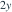
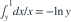

，给定 X=x 后 Y 在 (0,x) 均匀。Y 在 (0,1) 上的边际密度为？
，给定 X=x 后 Y 在 (0,x) 均匀。Y 在 (0,1) 上的边际密度为？- A
- B

- C

- D

我已思考，展开答案与解析
正确答案：A
- 联合密度为1/x，支持0<y<x<1。对x从y积分到1得

。
易错提醒先明确分布参数、独立性和统计量的定义，再进行计算。
南审 813 · 2021 · 第1页 一·2；从大题提取考点并重写为单选
单选改编；题干与选项已重新编排
查看参考来源
，给定 X=x 后 Y 在 (0,x) 均匀。Y 在 (0,1) 上的边际密度为？

。南审 813 · 2021 · 第1页 一·2；从大题提取考点并重写为单选
单选改编；题干与选项已重新编排
查看参考来源